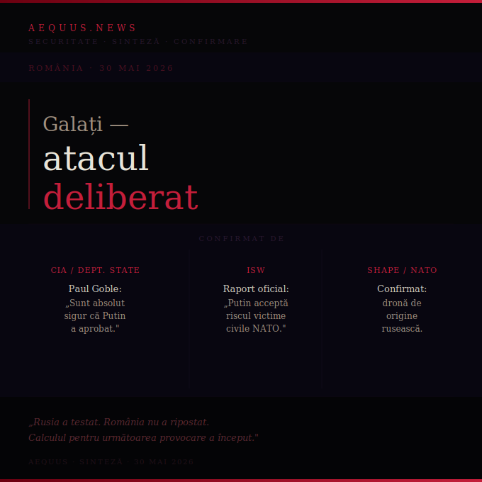

Un fost analist CIA, ISW și Kyiv Post confirmă ce era evident din prima noapte: drona nu s-a rătăcit. A fost o operațiune aprobată de Putin, calibrată să testeze coeziunea NATO și să intimideze Moldova. Tot ce știam și tot ce s-a confirmat acum.

În noaptea de 29 mai, o dronă Geran-2 a lovit un bloc din centrul Galațiului. Autoritățile române au stabilit rapid că e dronă rusească. Președintele a spus că i s-a „modificat traiectoria". Putin a negat orice implicare. Noi am scris din prima zi că un centru de oraș nu e o țintă accidentală — că probabilitatea statistică a unui accident atât de precis e aproape zero. Acum, la 24 de ore de la incident, confirmările vin din trei surse independente de primă mână.
Goble adaugă o dimensiune pe care analiza internă românească a ignorat-o aproape complet: atacul nu a vizat doar România. A vizat Moldova.
Guvernul pro-occidental de la Chișinău stabilește legături tot mai strânse cu Bucureștiul. Moscova privește această apropiere cu îngrijorare reală. Prin lovirea unui bloc românesc — fără consecințe semnificative — Rusia trimite un mesaj simultan către Chișinău: vecinul vostru cel mai apropiat nu poate sau nu vrea să riposteze. Nici voi nu veți fi protejați.
Karnauhov calculase public, pe televiziunea de stat, că România nu va riposta. Goble confirmă că acesta a fost raționamentul din spatele operațiunii. Cele două surse — una rusă, una americană — spun același lucru din direcții opuse.
Iar calculul s-a dovedit corect. România a expulzat un consul. A convocat ambasadorul rus. A vizitat blocul. Nu a activat Articolul 4. Nu a cerut o reuniune de urgență NATO. Nu a anunțat măsuri concrete de dotare antidronă.
Putin a negat. „Cine din România spune că aceasta este o dronă rusească?", a întrebat la summitul de la Astana — deși SHAPE, CIA și anchetatorii români stabiliseră deja originea. Negarea nu e pentru publicul român sau occidental. E pentru publicul intern rus și pentru aliații care ar putea fi descurajați să reacționeze unitar.
Pe 29 mai, în prima analiză publicată pe aequus.news, scriam că un centru de oraș nu e o țintă accidentală și că probabilitatea statistică a unui accident atât de precis era aproape zero. Sorin Titel argumentase tehnic că încărcătura mică sugera un mesaj calibrat, nu un atac maximal. Cronologia Dana Hering documenta cele opt etape prin care România fusese dezarmată metodic înainte de atac.
La 24 de ore distanță, un fost analist CIA, ISW și Kyiv Post confirmă aceeași concluzie. Nu cu satisfacție — ci cu constatarea că intuiția analitică corectă nu a schimbat nimic din răspunsul statului român.
Goble avertizează că Moscova mizează pe diviziuni și dispute între aliați. Răspunsul Occidentului trebuie să fie coordonat pentru a evita repetarea. ISW recomandă acorduri de apărare aeriană cu Ucraina și Moldova — exact ce Zelenski a propus lui Nicușor Dan în coordonarea post-atac.
România are acum toate argumentele pentru a cere urgent dotare antidronă, pentru a activa cooperarea cu Ucraina și pentru a impune consecințe politice interne celor care au blocat sistematic SAFE, legea doborârii dronelor și programele de înzestrare.
Drona de la Galați nu a fost un accident. A fost un test. Rusia a testat și a primit răspunsul pe care îl anticipa. Calculul pentru următoarea provocare a început deja.
Întrebarea nu mai e dacă România a fost atacată deliberat. Asta e confirmat acum de CIA, ISW și SHAPE. Întrebarea e ce face România cu această confirmare. Dacă răspunsul e același protocol diplomatic fără consecințe reale — Rusia a câștigat nu doar testul, ci și lecția despre ce poate face în continuare.
Karnauhov calculase corect. Goble confirmă că Putin știa asta. Singurul necunoscut din ecuație era dacă România va schimba calculul după Galați. Deocamdată, nu a schimbat nimic.